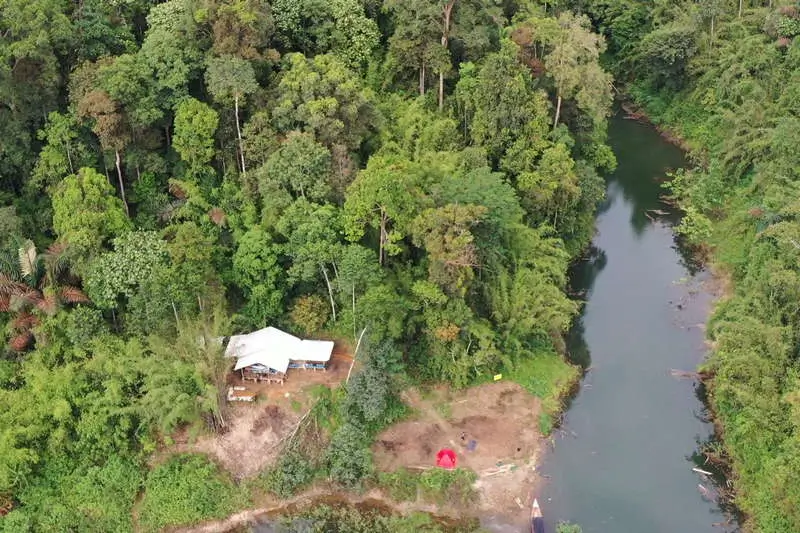
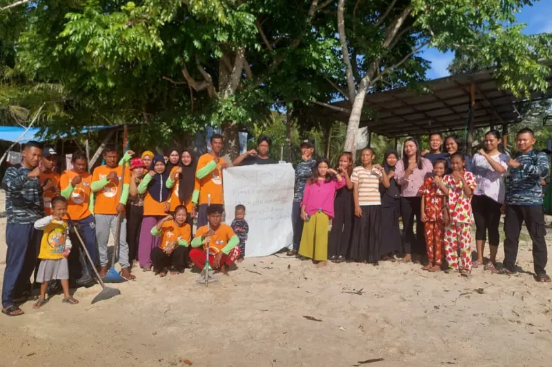
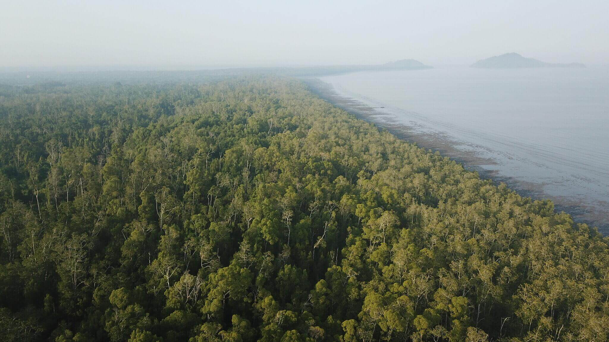
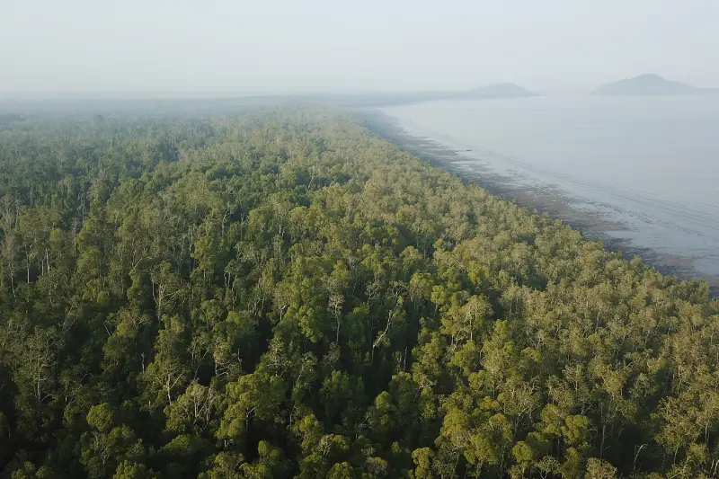
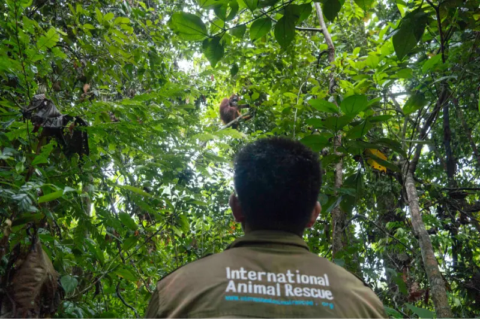
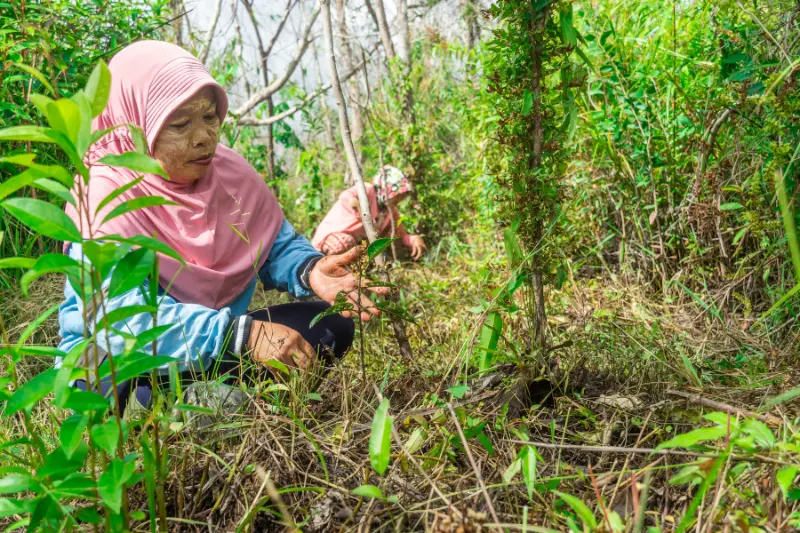
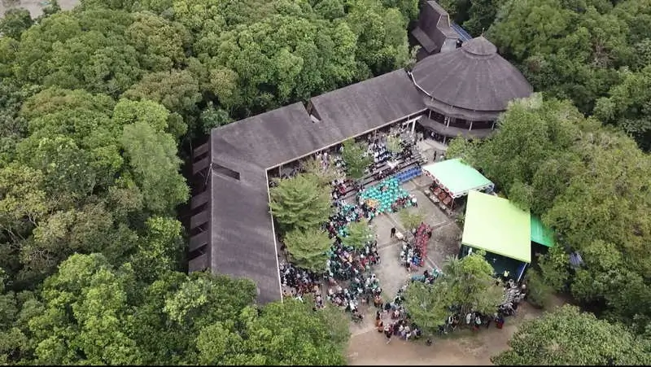
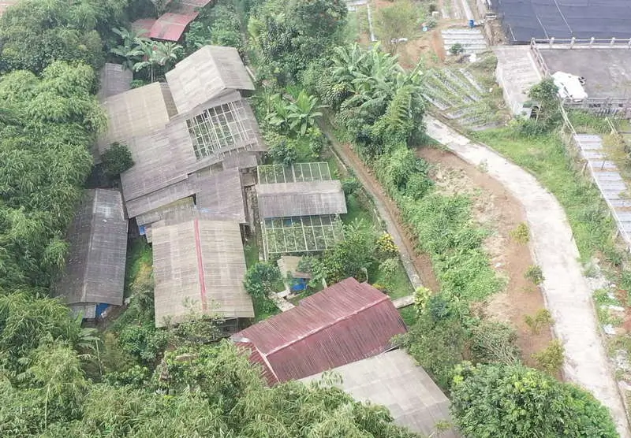

Batutegi, Lampung
Kawasan konservasi kukang dan primata lainnya, dengan fokus pada rehabilitasi satwa dan restorasi habitat alami di lereng Gunung Betung.
Lihat ProgramDari hutan hujan Kalimantan hingga kawasan lindung Sumatra, setiap lokasi kami memiliki peran penting dalam misi penyelamatan dan keanekaragaman hayati Indonesia yang terancam.
Kami beroperasi di wilayah-wilayah prioritas konservasi dengan kehadiran spesies kunci dan tingkat ancaman tinggi.

Kawasan konservasi kukang dan primata lainnya, dengan fokus pada rehabilitasi satwa dan restorasi habitat alami di lereng Gunung Betung.
Lihat Program
Pulau pra-pelepasan orangutan yang menyediakan lingkungan semi-alami untuk persiapan kembali ke habitat liar.
Lihat Program
Kawasan lindung yang mencakup koridor satwa penting bagi orangutan dan spesies endemik Kalimantan lainnya.
Lihat Program
Wilayah hutan primer dengan populasi orangutan liar yang menjadi fokus monitoring dan perlindungan habitat jangka panjang.
Lihat Program
Area konservasi dengan inisiatif penjagaan hutan, rumah bagi beruang madu dan primata.
Lihat Program
Kawasan lindung yang mencakup koridor satwa penting bagi orangutan dan spesies endemik Kalimantan lainnya.
Lihat ProgramDua lokasi strategis yang menjadi jantung operasional kami dalam menyelamatkan, merehabilitasi, dan mengedukasi.

Fasilitas medis dan rehabilitasi lengkap untuk orangutan, satwa liar lain, serta pusat memberdayakan masyarakat lokal melalui pelatihan, konservasi, dan pendidikan.
Lihat Program
Basis koordinasi program nasional dan pusat edukasi konservasi. Di sini kami mengembangkan kebijakan, pengetahuan penelitian, dan materi masyarakat dan penyadartahuan publik.
Lihat Program